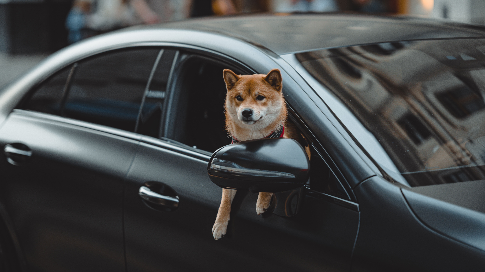
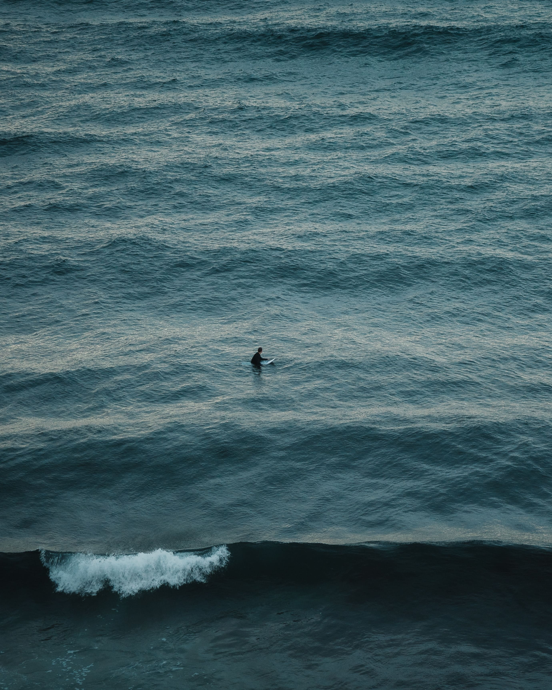
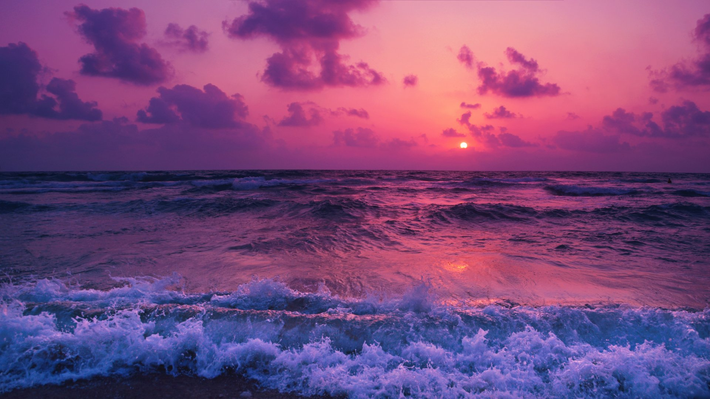
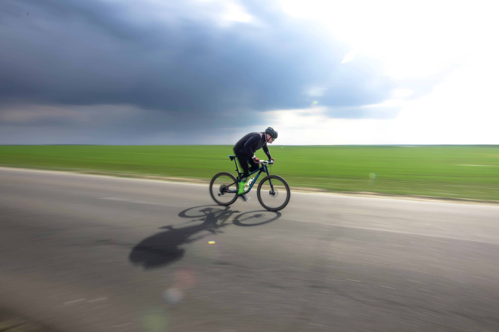
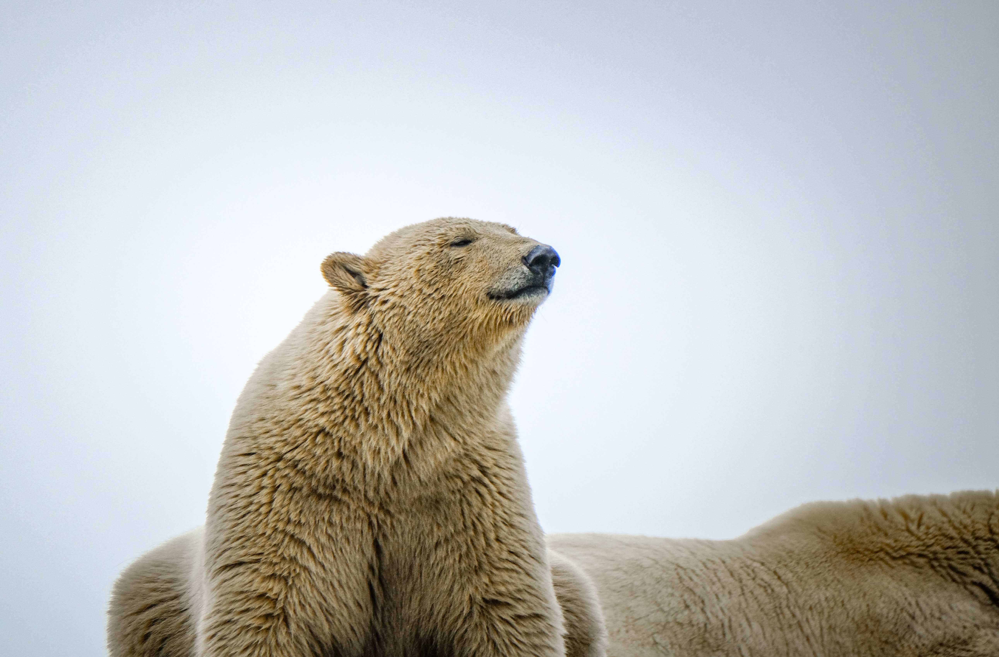

Фритрек и нулевой спринт: Подготовка к работе
<confidence>
Это было самое начало пути. На этом этапе важно было проникнуться основами и настроиться на учёбу. И, возможно, подумать, как новые знания могут повлиять на ваше будущее.
Я понимал, что меня будет ждать во время обучения и был готов ко всем трудностям.
1 спринт: Я — чистый лист
<faith>
На первых этапах мы работали со страхами и сомнениями, которые часто испытывают новички. Один из них — страх перед чистым листом. Это, конечно же, намного сложнее, чем боязнь куска бумаги. Часто за этим ощущением скрываются более глубокие вопросы: с чего начать? а вдруг будет слишком сложно? что, если я не справлюсь?
Сомнения и страхи - это нормально. Мы люди, и я думаю, что каждый из нас испытывает подобные чувства перед началом чего-то нового.
1 спринт: А если не получится?
<education>
Первый проект — позади! Но это всё ещё самое начало пути. Радость могла быстро померкнуть и смениться ожиданием провала. Или вы, наоборот, могли вдохновиться успехами и поверить в себя.
Могу сказать, что после успешной сдачи проектных работ, чувство радости конечно присутствовало. Это сказывалось на настроении, оно было очень хорошим. Определенно, я испытывал вдохновение перед предстоящими проектными работами. Думаю, что благодоря полученным новым знаниям, я становился уверенее и всё больше верю, что у меня получится достичь цели.
2 спринт: Погоня за идеалом
<dream>

На этом этапе вы уже достаточно разбирались в основах вёрстки, чтобы понять, как много ещё впереди. Вы могли попытаться погнаться за идеалом и понять, что он недостижим. А, может, вы вовсе и не подвержены перфекционизму и вместо того, чтобы сделать идеально, старались просто сделать.
Я достаточно разобрался в основах вёрстки и понимаю как много ещё впереди.
2 спринт: О тех, кто рядом
<CARE>
Всё это время вы были не одиноки (хотя, возможно, иногда и чувствовали, что одни против целого мира). Вас окружали одногруппники, команда сопровождения и просто близкие люди, которым можно пожаловаться, если очередной макет просто так не поддавался. Осваивать что-то новое легче, когда рядом есть единомышленники, не правда ли?
Осваивать что-то новое действительно легче, когда рядом есть единомышленники. Я очень благодарен одногруппникам, команде сопровождения и близким людям. Спасибо!
3 спринт: Обходные стратегии
<success>
На этом курсе вы постоянно решали разные задачи. В какой-то момент вам могло показаться, что решения просто иссякли. Значит, пришло время посмотреть на задачу под другим углом.
Решение некоторых задач посещали меня когда я вообще занимался другими вещами не связанными с обучением. Это забавно.
3 спринт: Когда опускаются руки
<SUPPORT>
Во время учёбы часто возникает чувство, когда не знаешь, за что хвататься. Вроде и проектную пора сдавать, и задачи хочется порешать, и в теории получше разобраться, и жизнь не забыть пожить. В такие моменты очень нужна концентрация. Вспомните, откуда вы её черпали.
Желание стать фронтенд-разработчиком помогает мне справиться с подобными трудностями.
«Сейчас я здесь»
<knowledge>
Сейчас вы уже очень много знаете о вёрстке. Но это только начало. Во-первых, впереди ещё много материала про «красотищу». Во-вторых, с окончанием курса учёба не заканчивается. Вёрстка — это целый мир. И этот мир постоянно меняется. Познать его полностью не получится, но это тот случай, когда важен сам процесс познания. Ведь часто путь — и есть результат.
Дорогу осилит идущий!